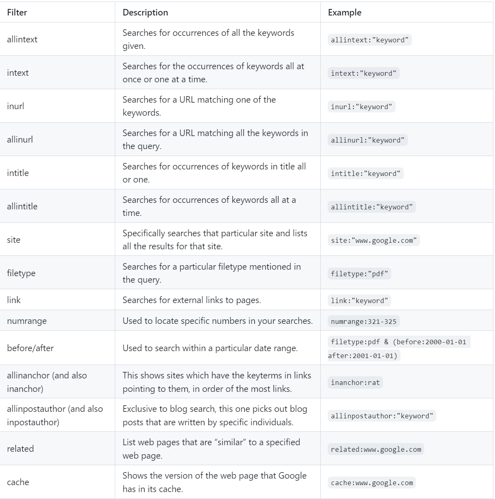

Google Dorking
Discover the art of Google Dorking, a technique used to find sensitive information and hidden data on the internet using advanced search queries.
Google dorking, also known as Google hacking, is a technique used by cybersecurity professionals and hackers alike to leverage advanced search operators in Google to discover sensitive information or vulnerabilities on websites and servers. By strategically crafting search queries, individuals can uncover confidential data that may not be readily accessible through conventional browsing methods. For example, one common Google dorking technique involves searching for publicly accessible directories or files by using the "site:" operator combined with specific directory paths. An example query could be "site:example.com intitle:index.of" to search for directory listings on the example.com domain. Additionally, using the "filetype:" operator allows users to target specific file types, such as searching for PDF documents containing sensitive information with "filetype:pdf confidential" query. These advanced search techniques highlight the importance of securing web servers and properly managing online assets to mitigate the risks associated with Google dorking attacks.
Dorking Cheat sheet
This is an entry level Dorking Cheet sheet to get you started